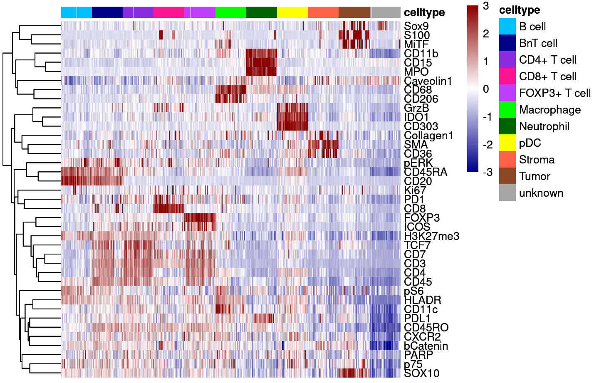
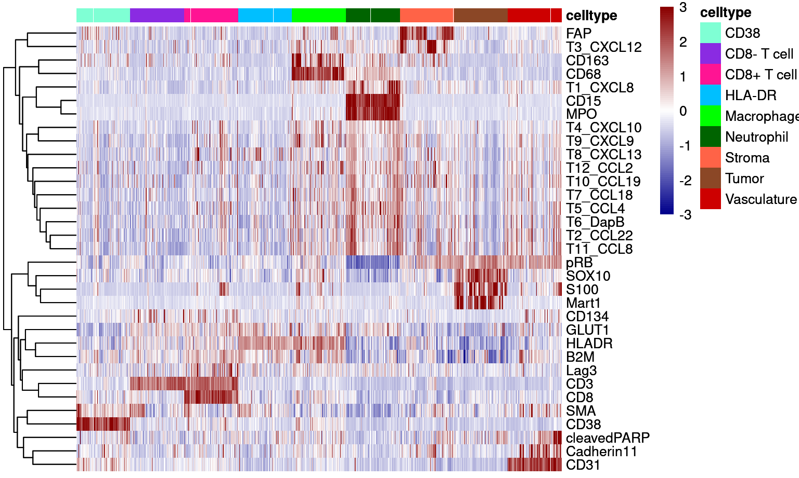
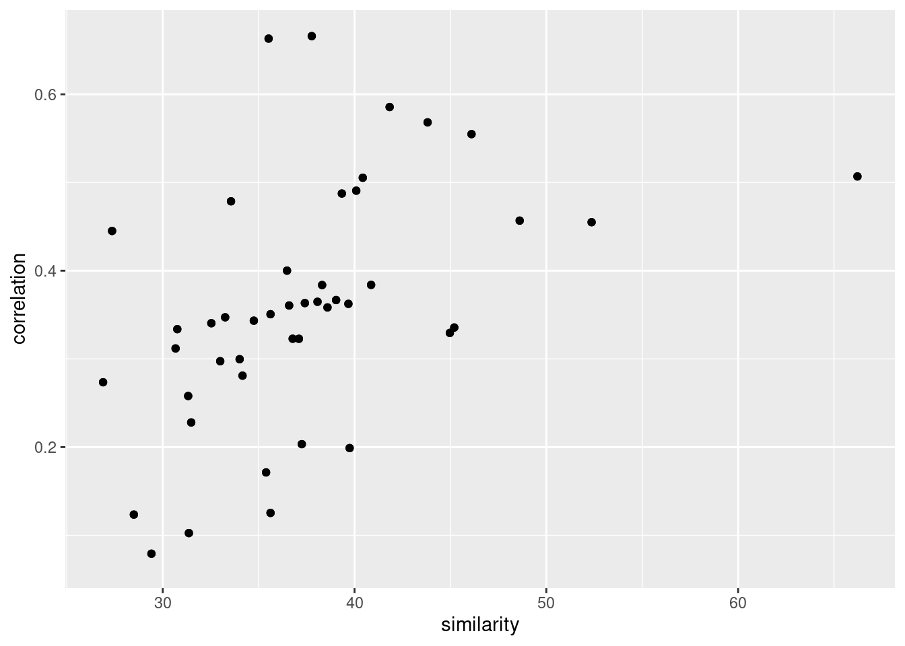

Supplementary Figure 6
Tobias Hoch and Daniel Schulz
2021-01-30
Last updated: 2022-02-22
Checks: 7 0
Knit directory: MelanomaIMC/
This reproducible R Markdown analysis was created with workflowr (version 1.7.0). The Checks tab describes the reproducibility checks that were applied when the results were created. The Past versions tab lists the development history.
Great! Since the R Markdown file has been committed to the Git repository, you know the exact version of the code that produced these results.
Great job! The global environment was empty. Objects defined in the global environment can affect the analysis in your R Markdown file in unknown ways. For reproduciblity it’s best to always run the code in an empty environment.
The command set.seed(20200728) was run prior to running the code in the R Markdown file. Setting a seed ensures that any results that rely on randomness, e.g. subsampling or permutations, are reproducible.
Great job! Recording the operating system, R version, and package versions is critical for reproducibility.
Nice! There were no cached chunks for this analysis, so you can be confident that you successfully produced the results during this run.
Great job! Using relative paths to the files within your workflowr project makes it easier to run your code on other machines.
Great! You are using Git for version control. Tracking code development and connecting the code version to the results is critical for reproducibility.
The results in this page were generated with repository version d246c15. See the Past versions tab to see a history of the changes made to the R Markdown and HTML files.
Note that you need to be careful to ensure that all relevant files for the analysis have been committed to Git prior to generating the results (you can use wflow_publish or wflow_git_commit). workflowr only checks the R Markdown file, but you know if there are other scripts or data files that it depends on. Below is the status of the Git repository when the results were generated:
Ignored files:
Ignored: .DS_Store
Ignored: .Rproj.user/
Ignored: Table_S4.csv
Ignored: code/.DS_Store
Ignored: code/._.DS_Store
Ignored: data/.DS_Store
Ignored: data/._.DS_Store
Ignored: data/data_for_analysis/
Ignored: data/full_data/
Unstaged changes:
Modified: .gitignore
Modified: analysis/Supp-Figure_10.rmd
Modified: analysis/_site.yml
Deleted: analysis/license.Rmd
Note that any generated files, e.g. HTML, png, CSS, etc., are not included in this status report because it is ok for generated content to have uncommitted changes.
These are the previous versions of the repository in which changes were made to the R Markdown (analysis/Supp-Figure_6.rmd) and HTML (docs/Supp-Figure_6.html) files. If you’ve configured a remote Git repository (see ?wflow_git_remote), click on the hyperlinks in the table below to view the files as they were in that past version.
| File | Version | Author | Date | Message |
|---|---|---|---|---|
| Rmd | 5418dcd | toobiwankenobi | 2022-02-22 | add remaining pngs and new .htmls |
| html | 5418dcd | toobiwankenobi | 2022-02-22 | add remaining pngs and new .htmls |
| Rmd | 64e5fde | toobiwankenobi | 2022-02-16 | change order and naming of supp fig files |
| Rmd | f9a3a83 | toobiwankenobi | 2022-02-08 | clean repo for release |
| Rmd | fa0f601 | toobiwankenobi | 2022-02-06 | clean Supp Fig code |
| Rmd | b20b6fb | toobiwankenobi | 2022-02-02 | update code for Supp Figures |
| Rmd | d6a945a | toobiwankenobi | 2021-12-06 | updated figures |
| Rmd | 3da15db | toobiwankenobi | 2021-11-24 | changes for revision |
| Rmd | 434eee4 | toobiwankenobi | 2021-09-23 | Figure adaptions and new Supp Figure with gates |
| Rmd | 545c207 | toobiwankenobi | 2020-12-22 | clean up branch |
| Rmd | 9442cb9 | toobiwankenobi | 2020-12-22 | add all new files |
| Rmd | d8c7699 | Tobias Hoch | 2020-10-23 | adapt figure 1 and supp fig 6 |
| Rmd | 77466b7 | Tobias Hoch | 2020-10-22 | work on subfigures |
Introduction
This script generates plots for Supplementary Figure 6.
Preparations
knitr::opts_chunk$set(echo = TRUE, message= FALSE)
knitr::opts_knit$set(root.dir = rprojroot::find_rstudio_root_file())Load libraries
sapply(list.files("code/helper_functions", full.names = TRUE), source) code/helper_functions/calculateSummary.R
value ?
visible FALSE
code/helper_functions/censor_dat.R
value ?
visible FALSE
code/helper_functions/detect_mRNA_expression.R
value ?
visible FALSE
code/helper_functions/DistanceToClusterCenter.R
value ?
visible FALSE
code/helper_functions/findMilieu.R code/helper_functions/findPatch.R
value ? ?
visible FALSE FALSE
code/helper_functions/getInfoFromString.R
value ?
visible FALSE
code/helper_functions/getSpotnumber.R
value ?
visible FALSE
code/helper_functions/plotCellCounts.R
value ?
visible FALSE
code/helper_functions/plotCellFractions.R
value ?
visible FALSE
code/helper_functions/plotDist.R code/helper_functions/read_Data.R
value ? ?
visible FALSE FALSE
code/helper_functions/scatter_function.R
value ?
visible FALSE
code/helper_functions/sceChecks.R
value ?
visible FALSE
code/helper_functions/validityChecks.R
value ?
visible FALSE library(cytomapper)
library(SingleCellExperiment)
library(reshape2)
library(tidyverse)
library(dplyr)
library(data.table)
library(ggrastr)
library(ggplot2)
library(colorRamps)
library(RColorBrewer)
library(gridExtra)
library(ggpmisc)
library(ComplexHeatmap)
library(scater)
library(dittoSeq)
library(ggbeeswarm)
library(corrplot)
library(ggpubr)
library(cowplot)
library(circlize)
library(ggrepel)
library(rstatix)
library(ape)
library(biomaRt)Load Data
# SCE object
sce_prot = readRDS(file = "data/data_for_analysis/sce_protein.rds")
sce_rna = readRDS(file = "data/data_for_analysis/sce_RNA.rds")
sce_rna <- sce_rna[,sce_rna$Location != "CTRL"]
sce_prot <- sce_prot[,sce_prot$Location != "CTRL"]Analysis
Supp Fig 5A
# sample 300 cells per cell type
sce_prot_sub <- sce_prot[,sce_prot$layer_1_gated != "unlabelled"]
set.seed(2345)
# sub-sample 500 cells
sample <- data.frame(colData(sce_prot_sub)) %>%
group_by(celltype) %>%
slice_sample(n=300)
# unique cellIDs
sample <- sample[sample$cellID %in% unique(sample$cellID),]
cur_sce <- sce_prot[,sce_prot$cellID %in% sample$cellID]
good_markers <- rownames(sce_prot)[rowData(sce_prot)$good_marker]
colors <- metadata(sce_prot)$colour_vector$celltype
colors <- colors[c("B cell", "BnT cell", "CD4+ T cell", "CD8+ T cell", "FOXP3+ T cell", "Macrophage", "Neutrophil", "pDC", "Stroma", "Tumor", "unknown")]
dittoHeatmap(cur_sce,
genes = good_markers,
assay = "asinh",
annot.by = c("celltype"),
show_colnames = FALSE,
cluster_rows = TRUE,
annot.colors = colors,
heatmap.colors = colorRampPalette(c("dark blue", "white", "dark red"))(100),
breaks = seq(-3,3, length.out = 101),
use_raster=TRUE)
| Version | Author | Date |
|---|---|---|
| 235386f | toobiwankenobi | 2022-02-22 |
Supp Figure 6B
set.seed(2345)
sce_rna_sub <- sce_rna[,sce_rna$layer_1_gated != "unlabelled"]
# remove unkown - not enough cells
sce_rna_sub <- sce_rna_sub[,sce_rna_sub$celltype != "unknown"]
# sub-sample 500 cells
sample <- data.frame(colData(sce_rna_sub)) %>%
group_by(celltype) %>%
slice_sample(n=300)
# unique cellIDs
sample <- sample[sample$cellID %in% unique(sample$cellID),]
cur_sce <- sce_rna[,sce_rna$cellID %in% unique(sample$cellID)]
good_markers <- rownames(sce_rna)[rowData(sce_rna)$good_marker]
colors <- metadata(sce_rna)$colour_vector$celltype[]
colors <- colors[c("CD38", "CD8- T cell", "CD8+ T cell", "HLA-DR", "Macrophage", "Neutrophil", "Stroma", "Tumor", "Vasculature")]
dittoHeatmap(cur_sce, genes = good_markers, assay = "asinh",
annot.by = c("celltype"),
show_colnames = FALSE,
cluster_rows = TRUE,
annot.colors = colors,
heatmap.colors = colorRampPalette(c("dark blue", "white", "dark red"))(100),
breaks = seq(-3,3, length.out = 101),
use_raster=TRUE)
| Version | Author | Date |
|---|---|---|
| 235386f | toobiwankenobi | 2022-02-22 |
Supp Figure 6C and 5D
These plots are generated after the randomForest classification. For this, see files 04_1_RNA_celltype_classification.rmd and 04_1_Protein_celltype_classification.rmd
Supp Figure 6E
# rna data
cur_rna <- data.frame(colData(sce_rna))
# protein data
cur_prot <- data.frame(colData(sce_prot))
# rna data set - cell type fractions
rna_sum <- cur_rna %>%
group_by(Description, celltype) %>%
summarise(n = n()) %>%
group_by(Description) %>%
mutate(fraction = n/sum(n)) %>%
reshape2::dcast(Description ~ celltype, value.var = "fraction", fill = 0)
# protein data set - cell type fractions
prot_sum <- cur_prot %>%
group_by(Description, celltype) %>%
summarise(n = n()) %>%
group_by(Description) %>%
mutate(fraction = n/sum(n)) %>%
reshape2::dcast(Description ~ celltype, value.var = "fraction", fill = 0)
# equal images
all(rna_sum$Description == prot_sum$Description)[1] TRUE# correlation
cor <- cor(rna_sum[,-1], prot_sum[,-1], method = "pearson")
# reorder cor matrix
cor <- cor[c("CD38", "HLA-DR", "Stroma", "Vasculature", "unknown", "CD8- T cell", "CD8+ T cell", "Macrophage", "Neutrophil", "Tumor"),
c("B cell", "BnT cell", "pDC", "Stroma", "unknown", "FOXP3+ T cell", "CD4+ T cell", "CD8+ T cell", "Macrophage", "Neutrophil", "Tumor") ]
corrplot(cor,
addCoef.col = "black",
method = "circle",
tl.col="black",
tl.cex = 1.5)
| Version | Author | Date |
|---|---|---|
| 235386f | toobiwankenobi | 2022-02-22 |
# correlation and p-value
common_cells <- c("Macrophage", "Neutrophil", "Tumor", "CD8+ T cell")
# mean correlation for celltype specific correlation
round(mean(cor(rna_sum[,"Macrophage"], prot_sum[,"Macrophage"]),
cor(rna_sum[,"Neutrophil"], prot_sum[,"Neutrophil"]),
cor(rna_sum[,"Tumor"], prot_sum[,"Tumor"]),
cor(rna_sum[,"CD8+ T cell"], prot_sum[,"CD8+ T cell"])),2)[1] 0.93# p-values
cor.test(rna_sum[,"Macrophage"], prot_sum[,"Macrophage"])
Pearson's product-moment correlation
data: rna_sum[, "Macrophage"] and prot_sum[, "Macrophage"]
t = 31.629, df = 157, p-value < 2.2e-16
alternative hypothesis: true correlation is not equal to 0
95 percent confidence interval:
0.9050165 0.9481476
sample estimates:
cor
0.9297027 cor.test(rna_sum[,"Neutrophil"], prot_sum[,"Neutrophil"])
Pearson's product-moment correlation
data: rna_sum[, "Neutrophil"] and prot_sum[, "Neutrophil"]
t = 61.685, df = 157, p-value < 2.2e-16
alternative hypothesis: true correlation is not equal to 0
95 percent confidence interval:
0.9727088 0.9853381
sample estimates:
cor
0.9799866 cor.test(rna_sum[,"Tumor"], prot_sum[,"Tumor"])
Pearson's product-moment correlation
data: rna_sum[, "Tumor"] and prot_sum[, "Tumor"]
t = 47.778, df = 157, p-value < 2.2e-16
alternative hypothesis: true correlation is not equal to 0
95 percent confidence interval:
0.9554987 0.9759952
sample estimates:
cor
0.9672899 cor.test(rna_sum[,"CD8+ T cell"], prot_sum[,"CD8+ T cell"])
Pearson's product-moment correlation
data: rna_sum[, "CD8+ T cell"] and prot_sum[, "CD8+ T cell"]
t = 26.889, df = 157, p-value < 2.2e-16
alternative hypothesis: true correlation is not equal to 0
95 percent confidence interval:
0.8740854 0.9307515
sample estimates:
cor
0.9064157 Supp Figure 6F
Detection of chemokine expressing cells
for the detection of chemokine expressing cells we make use of the fact that we also measured a negative control (DapB).
# get the names of the chemokine channels without the negative control channel
chemokine_channels = rownames(sce_rna[which(grepl("T\\d+_",rownames(sce_rna)) & ! grepl("DapB",rownames(sce_rna))),])
chemokine_channels_sub <- c("T2_CCL22")
# run function to define chemokine expressing cells
output_list <- compute_difference(sce_rna,
cellID = "cellID",
assay_name = "asinh",
threshold = 0.01,
mRNA_channels = chemokine_channels_sub,
negative_control = "T6_DapB",
return_calc_metrics = TRUE)Plot Results from Chemokine Detection
# check difference between DapB and signal (histogram)
plot_list = list()
for(i in chemokine_channels_sub){
# subset whole data set for visualization purposes
diff_chemo <- output_list[[i]]
diff_chemo_sub <- diff_chemo[sample(nrow(diff_chemo), nrow(diff_chemo)*0.5), ]
a <- ggplot(data = diff_chemo_sub, aes(x=scaled_diff)) +
geom_histogram(binwidth = 0.05, aes(fill =
ifelse(padj <= 0.01 & scaled_diff > 0, 'p<0.01', 'n.s.'))) +
xlab(paste(paste("Scaled Difference ", i, sep = " "), " - DapB", sep = "")) +
xlim(-5,7) +
theme_minimal() +
theme(text = element_text(size=20),
legend.position = "none") +
scale_fill_manual(values = c("black", "deepskyblue1"))
# significant cells defined by subtraction
b <- ggplot(data=diff_chemo_sub, aes(x=mean_negative_control, y=mean_chemokine)) +
geom_point_rast(alpha=0.2, aes(col =
ifelse(padj <= 0.01 & scaled_diff > 0, 'p<0.01', 'n.s.'))) +
scale_color_manual(values = c("black", "deepskyblue1"),
name = "Legend") +
guides(color = guide_legend(override.aes = list(alpha=1, size=3))) +
xlim(0,5.5) + ylim(0,5.5) +
ylab(paste("Mean expression of", i, sep=" ")) +
xlab("Mean DapB mRNA expression") +
theme_minimal() +
theme(text = element_text(size=20))
grid.arrange(a,b, nrow = 1, ncol=2)
}Warning: Removed 327 rows containing non-finite values (stat_bin).Warning: Removed 4 rows containing missing values (geom_bar).Warning: Removed 2 rows containing missing values (geom_point).
| Version | Author | Date |
|---|---|---|
| 235386f | toobiwankenobi | 2022-02-22 |
Supp Figure 6G
This script reproduces the homology analysis between the different chemokines. We downloaded the data from www.ncbi.nlm.nih.gov and saved the transcript sequences. https://www.ebi.ac.uk/Tools/msa/clustalo/ was used to align all-vs-all transcripts using the following call:
$APPBIN/clustal-omega-1.2.4/bin/clustalo --infile clustalo-E20210914-122047-0397-8283578-p2m.sequence --threads 8 --MAC-RAM 8000 --verbose --guidetree-out clustalo-E20210914-122047-0397-8283578-p2m.dnd --outfmt clustal --resno --outfile clustalo-E20210914-122047-0397-8283578-p2m.clustal_num --output-order tree-order --seqtype dnaWe will first look at the identity matrix, inidcating the percentage of sequence similarity.
seq_similarity <- read.table("data/data_for_analysis/ClustalW_results/identity_matrix.txt")
rownames(seq_similarity) <- seq_similarity$V2
seq_similarity <- seq_similarity[,-c(1,2)]
# Remove non coding transcript variants
seq_similarity <- seq_similarity[!grepl("XR_|NR_", rownames(seq_similarity)),
!grepl("XR_|NR_", rownames(seq_similarity))]
rownames(seq_similarity) <- sub("\\.[0-9]*", "", rownames(seq_similarity))
phylogenetic_tree <- read.tree("data/data_for_analysis/ClustalW_results/phylogenetic_tree.txt")Now, we will map between RefSeq transcript ids, ensemble transcript ids and gene names.
# workaround: useMart error: SSL certificate problem: unable to get local issuer certificate
httr::set_config(httr::config(ssl_verifypeer = FALSE), override = FALSE)
ensembl <- useMart("ensembl", dataset="hsapiens_gene_ensembl")
cur_tab <- getBM(attributes=c("refseq_mrna", "ensembl_gene_id", "hgnc_symbol"),
filters = "refseq_mrna", values = rownames(seq_similarity),
mart = ensembl, uniqueRows = FALSE)
cur_tab <- cur_tab[match(rownames(seq_similarity), cur_tab$refseq_mrna),]
rownames(seq_similarity) <- colnames(seq_similarity) <-
paste0(cur_tab$refseq_mrna, "_", cur_tab$hgnc_symbol)And we compare it to correlation in expression across all cells.
final_sce <- sce_rna
# select only the cells that express chemokines
for_analysis <- final_sce[,final_sce$expressor != "NA"]
cur_cor <- cor(t(assay(for_analysis, "asinh")[c("T5_CCL4", "T7_CCL18", "T1_CXCL8",
"T4_CXCL10", "T3_CXCL12", "T8_CXCL13",
"T12_CCL2", "T2_CCL22",
"T9_CXCL9", "T11_CCL8", "T10_CCL19"),]),
method = "spearman")
pheatmap(cur_cor, color = colorRampPalette(c("dark blue", "white", "dark red"))(100),
breaks = seq(-1, 1, length.out = 100))
| Version | Author | Date |
|---|---|---|
| 235386f | toobiwankenobi | 2022-02-22 |
cor_tibbble <- cur_cor %>%
as_tibble() %>%
mutate(probe = rownames(cur_cor)) %>%
pivot_longer(cols = 1:ncol(cur_cor)) %>%
mutate(probe = str_split(probe, pattern = "_", simplify = TRUE)[,2],
name = str_split(name, pattern = "_", simplify = TRUE)[,2]) %>%
arrange(probe, name) %>%
filter(probe != name)
sim_tibble <- seq_similarity %>%
as_tibble() %>%
mutate(probe = rownames(seq_similarity)) %>%
pivot_longer(cols = 1:ncol(seq_similarity)) %>%
mutate(from_chemo = str_split(probe, pattern = "_", simplify = TRUE)[,3],
to_chemo = str_split(name, pattern = "_", simplify = TRUE)[,3]) %>%
group_by(from_chemo, to_chemo) %>%
dplyr::summarize(mean_similarity = mean(value, na.rm=TRUE)) %>%
arrange(from_chemo, to_chemo) %>%
filter(from_chemo != to_chemo)
all.equal(paste(cor_tibbble$probe, cor_tibbble$name),
paste(sim_tibble$from_chemo, sim_tibble$to_chemo))[1] TRUEggplot(data.frame(similarity = sim_tibble$mean_similarity,
correlation = cor_tibbble$value)) +
geom_point(aes(similarity, correlation))Warning: Removed 20 rows containing missing values (geom_point).
| Version | Author | Date |
|---|---|---|
| 235386f | toobiwankenobi | 2022-02-22 |
cor.test(sim_tibble$mean_similarity,
cor_tibbble$value)
Pearson's product-moment correlation
data: sim_tibble$mean_similarity and cor_tibbble$value
t = 4.9613, df = 88, p-value = 3.387e-06
alternative hypothesis: true correlation is not equal to 0
95 percent confidence interval:
0.2883482 0.6150626
sample estimates:
cor
0.4675216 Number of co-expressors
Finally, we will compare the sequence similarity to the jaccard index of chemokine expressors.
# Define the jaccard similarity
jaccard <- function(x,y){
intersection <- length(intersect(x,y))
union = length(x) + length(y) - intersection
return (intersection/union)
}
# We will pass the unique cell ids into this function
cur_out <- lapply(seq_len(nrow(sim_tibble)),
function(x){
from_chemo_cells <- colnames(final_sce)[colData(final_sce)[[sim_tibble$from_chemo[x]]] != 0]
to_chemo_cells <- colnames(final_sce)[colData(final_sce)[[sim_tibble$to_chemo[x]]] != 0]
return(jaccard(from_chemo_cells, to_chemo_cells))
})
sim_tibble$jaccard_sim <- unlist(cur_out)
ggplot(data.frame(similarity = sim_tibble$mean_similarity,
jaccard_sim = sim_tibble$jaccard_sim)) +
geom_point(aes(similarity, jaccard_sim)) +
geom_smooth(method = "lm", aes(similarity, jaccard_sim)) + stat_cor(method = "pearson",
aes(x = similarity, y = jaccard_sim, label = paste0("atop(", ..r.label.., ",", ..p.label.. ,")")),
size = 7, cor.coef.name = "R", label.sep="\n", label.y.npc = "top") +
theme_bw() + theme(text=element_text(size=15)) +
xlab("Sequence similarity") + ylab("Chemokine co-expression [Jaccard index]")Warning: Removed 20 rows containing non-finite values (stat_smooth).Warning: Removed 20 rows containing non-finite values (stat_cor).Warning: Removed 20 rows containing missing values (geom_point).
| Version | Author | Date |
|---|---|---|
| 235386f | toobiwankenobi | 2022-02-22 |
cor.test(sim_tibble$mean_similarity,
sim_tibble$jaccard_sim)
Pearson's product-moment correlation
data: sim_tibble$mean_similarity and sim_tibble$jaccard_sim
t = 1.6191, df = 88, p-value = 0.109
alternative hypothesis: true correlation is not equal to 0
95 percent confidence interval:
-0.03836368 0.36433718
sample estimates:
cor
0.1700787 Supp Figure 6H
Fraction of Tumor Cells that express chemokines
cur_dat <- data.frame(colData(sce_rna))
cur_dat <- cur_dat %>%
filter(celltype == "Tumor") %>%
filter(Location != "CTRL")
cur_dat <- cur_dat[,c("ImageNumber", "Mutation", colnames(cur_dat)[grepl(glob2rx("C*L*"),names(cur_dat))])]
# colSums of Chemokines in Tumor Cells (Multiple Producer count more than once)
cur_dat <- cur_dat %>%
group_by(ImageNumber, Mutation) %>%
mutate(cells = n()) %>%
group_by(ImageNumber, cells, Mutation) %>%
summarise_each(funs(sum))Warning: `summarise_each_()` was deprecated in dplyr 0.7.0.
Please use `across()` instead.
This warning is displayed once every 8 hours.
Call `lifecycle::last_lifecycle_warnings()` to see where this warning was generated.Warning: `funs()` was deprecated in dplyr 0.8.0.
Please use a list of either functions or lambdas:
# Simple named list:
list(mean = mean, median = median)
# Auto named with `tibble::lst()`:
tibble::lst(mean, median)
# Using lambdas
list(~ mean(., trim = .2), ~ median(., na.rm = TRUE))
This warning is displayed once every 8 hours.
Call `lifecycle::last_lifecycle_warnings()` to see where this warning was generated.# compute fractions
cur_dat[,4:14] <- cur_dat[,4:14] / t(cur_dat$cells)
cur_dat <- cur_dat %>%
filter(cells > 200) %>%
reshape2::melt(id.vars=c("ImageNumber", "cells", "Mutation"), variable.name="chemokine", value.name="fraction")
ggplot(cur_dat,aes(x=fct_reorder(chemokine, fraction, .fun = median, .desc = TRUE), y=fraction+0.001)) +
geom_boxplot(alpha=.5) +
geom_quasirandom(alpha=.2) +
theme_bw() +
theme(text=element_text(size=16)) +
ylab("Fraction of Expressing Tumor Cells\n(fraction + 0.001)") +
xlab("") +
scale_y_log10() +
annotation_logticks(sides = "l") +
geom_hline(yintercept = median(cur_dat$fraction+0.001), linetype = 2)
| Version | Author | Date |
|---|---|---|
| 235386f | toobiwankenobi | 2022-02-22 |
sessionInfo()R version 4.1.2 (2021-11-01)
Platform: x86_64-pc-linux-gnu (64-bit)
Running under: Ubuntu 20.04.3 LTS
Matrix products: default
BLAS/LAPACK: /usr/lib/x86_64-linux-gnu/openblas-pthread/libopenblasp-r0.3.8.so
locale:
[1] LC_CTYPE=en_US.UTF-8 LC_NUMERIC=C
[3] LC_TIME=en_US.UTF-8 LC_COLLATE=en_US.UTF-8
[5] LC_MONETARY=en_US.UTF-8 LC_MESSAGES=en_US.UTF-8
[7] LC_PAPER=en_US.UTF-8 LC_NAME=C
[9] LC_ADDRESS=C LC_TELEPHONE=C
[11] LC_MEASUREMENT=en_US.UTF-8 LC_IDENTIFICATION=C
attached base packages:
[1] grid stats4 stats graphics grDevices utils datasets
[8] methods base
other attached packages:
[1] biomaRt_2.50.3 ape_5.6-1
[3] rstatix_0.7.0 ggrepel_0.9.1
[5] circlize_0.4.13 cowplot_1.1.1
[7] ggpubr_0.4.0 corrplot_0.92
[9] ggbeeswarm_0.6.0 dittoSeq_1.6.0
[11] scater_1.22.0 scuttle_1.4.0
[13] ComplexHeatmap_2.10.0 ggpmisc_0.4.5
[15] ggpp_0.4.3 gridExtra_2.3
[17] RColorBrewer_1.1-2 colorRamps_2.3
[19] ggrastr_1.0.1 data.table_1.14.2
[21] forcats_0.5.1 stringr_1.4.0
[23] purrr_0.3.4 readr_2.1.2
[25] tidyr_1.2.0 tibble_3.1.6
[27] ggplot2_3.3.5 tidyverse_1.3.1
[29] reshape2_1.4.4 cytomapper_1.6.0
[31] SingleCellExperiment_1.16.0 SummarizedExperiment_1.24.0
[33] Biobase_2.54.0 GenomicRanges_1.46.1
[35] GenomeInfoDb_1.30.1 IRanges_2.28.0
[37] S4Vectors_0.32.3 BiocGenerics_0.40.0
[39] MatrixGenerics_1.6.0 matrixStats_0.61.0
[41] EBImage_4.36.0 dplyr_1.0.7
[43] workflowr_1.7.0
loaded via a namespace (and not attached):
[1] utf8_1.2.2 shinydashboard_0.7.2
[3] tidyselect_1.1.1 RSQLite_2.2.9
[5] AnnotationDbi_1.56.2 htmlwidgets_1.5.4
[7] BiocParallel_1.28.3 munsell_0.5.0
[9] ScaledMatrix_1.2.0 codetools_0.2-18
[11] withr_2.4.3 colorspace_2.0-2
[13] filelock_1.0.2 highr_0.9
[15] knitr_1.37 rstudioapi_0.13
[17] ggsignif_0.6.3 labeling_0.4.2
[19] git2r_0.29.0 GenomeInfoDbData_1.2.7
[21] farver_2.1.0 bit64_4.0.5
[23] pheatmap_1.0.12 rhdf5_2.38.0
[25] rprojroot_2.0.2 vctrs_0.3.8
[27] generics_0.1.2 xfun_0.29
[29] BiocFileCache_2.2.1 R6_2.5.1
[31] doParallel_1.0.16 clue_0.3-60
[33] rsvd_1.0.5 locfit_1.5-9.4
[35] cachem_1.0.6 bitops_1.0-7
[37] rhdf5filters_1.6.0 DelayedArray_0.20.0
[39] assertthat_0.2.1 promises_1.2.0.1
[41] scales_1.1.1 beeswarm_0.4.0
[43] gtable_0.3.0 beachmat_2.10.0
[45] Cairo_1.5-14 processx_3.5.2
[47] rlang_1.0.0 MatrixModels_0.5-0
[49] systemfonts_1.0.3 splines_4.1.2
[51] GlobalOptions_0.1.2 broom_0.7.12
[53] yaml_2.2.2 abind_1.4-5
[55] modelr_0.1.8 backports_1.4.1
[57] httpuv_1.6.5 tools_4.1.2
[59] ellipsis_0.3.2 raster_3.5-15
[61] jquerylib_0.1.4 ggridges_0.5.3
[63] Rcpp_1.0.8 plyr_1.8.6
[65] progress_1.2.2 sparseMatrixStats_1.6.0
[67] zlibbioc_1.40.0 RCurl_1.98-1.5
[69] prettyunits_1.1.1 ps_1.6.0
[71] GetoptLong_1.0.5 viridis_0.6.2
[73] haven_2.4.3 cluster_2.1.2
[75] fs_1.5.2 magrittr_2.0.2
[77] magick_2.7.3 SparseM_1.81
[79] reprex_2.0.1 whisker_0.4
[81] hms_1.1.1 mime_0.12
[83] fftwtools_0.9-11 evaluate_0.14
[85] xtable_1.8-4 XML_3.99-0.8
[87] jpeg_0.1-9 readxl_1.3.1
[89] shape_1.4.6 compiler_4.1.2
[91] crayon_1.4.2 htmltools_0.5.2
[93] mgcv_1.8-38 later_1.3.0
[95] tzdb_0.2.0 tiff_0.1-11
[97] lubridate_1.8.0 DBI_1.1.2
[99] dbplyr_2.1.1 rappdirs_0.3.3
[101] Matrix_1.4-0 car_3.0-12
[103] cli_3.1.1 parallel_4.1.2
[105] pkgconfig_2.0.3 getPass_0.2-2
[107] sp_1.4-6 terra_1.5-17
[109] xml2_1.3.3 foreach_1.5.2
[111] svglite_2.0.0 vipor_0.4.5
[113] bslib_0.3.1 XVector_0.34.0
[115] rvest_1.0.2 callr_3.7.0
[117] digest_0.6.29 Biostrings_2.62.0
[119] rmarkdown_2.11 cellranger_1.1.0
[121] DelayedMatrixStats_1.16.0 curl_4.3.2
[123] shiny_1.7.1 quantreg_5.87
[125] rjson_0.2.21 nlme_3.1-155
[127] lifecycle_1.0.1 jsonlite_1.7.3
[129] Rhdf5lib_1.16.0 carData_3.0-5
[131] BiocNeighbors_1.12.0 viridisLite_0.4.0
[133] fansi_1.0.2 pillar_1.7.0
[135] lattice_0.20-45 KEGGREST_1.34.0
[137] fastmap_1.1.0 httr_1.4.2
[139] glue_1.6.1 png_0.1-7
[141] iterators_1.0.13 svgPanZoom_0.3.4
[143] bit_4.0.4 stringi_1.7.6
[145] sass_0.4.0 HDF5Array_1.22.1
[147] blob_1.2.2 BiocSingular_1.10.0
[149] memoise_2.0.1 irlba_2.3.5